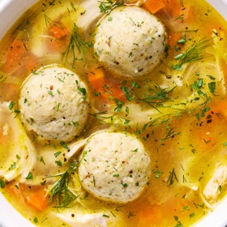

← All recipes
Joan Nathan’s Matzo Ball Soup

Servings: About 15 matzo balls ·
Ingredients
- 4 large eggs
- 1/4 cup schmaltz (rendered chicken fat), coconut oil or vegetable oil (kosher for Passover)
- 1/4 cup chicken stock or vegetable stock
- 1 cup matzo meal
- 1/4 teaspoon ground nutmeg
- 1 to 2 tablespoons freshly grated ginger
- 2 tablespoons finely chopped parsley, dill or cilantro
- 1 teaspoon salt, more for cooking
- Black pepper
Directions
- In a large bowl, combine the eggs, schmaltz, stock, matzo meal, nutmeg, ginger and parsley. Season with 1 teaspoon salt and a few grinds of pepper. Gently mix with a whisk or spoon. Cover and refrigerate until chilled, about 3 hours or overnight.
- To shape and cook the matzo balls, fill a wide, deep pan with lightly salted water and bring to a boil. With wet hands, take some of the mix and mold it into the size and shape of a Ping-Pong ball. Gently drop it into the boiling water, repeating until all the mix is used.
- Cover the pan, reduce heat to a lively simmer and cook matzo balls about 30 to 40 minutes for al dente, longer for light. If desired, the cooked matzo balls can be transferred to chicken or vegetable soup and served immediately. Alternatively, they may be placed on a baking sheet and frozen, then transferred to a freezer bag and kept frozen until a few hours before serving; reheat in chicken or vegetable soup or broth.
Original source: cooking.nytimes.com